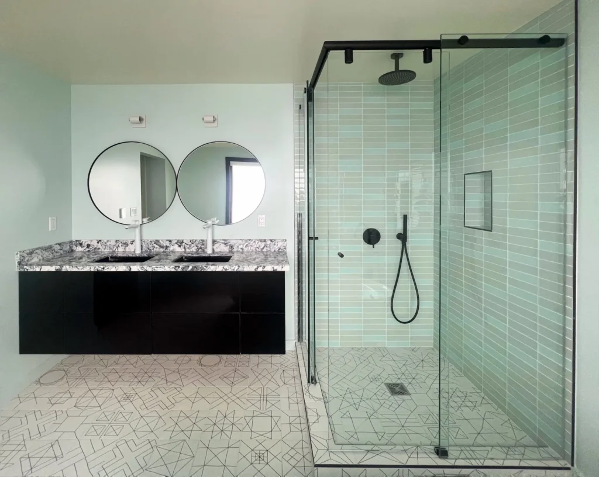
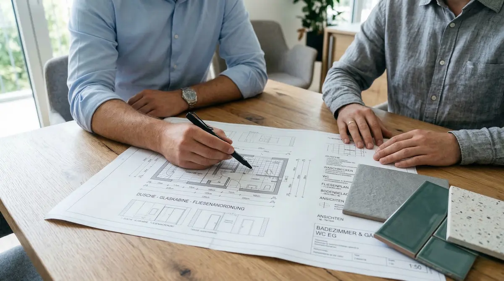
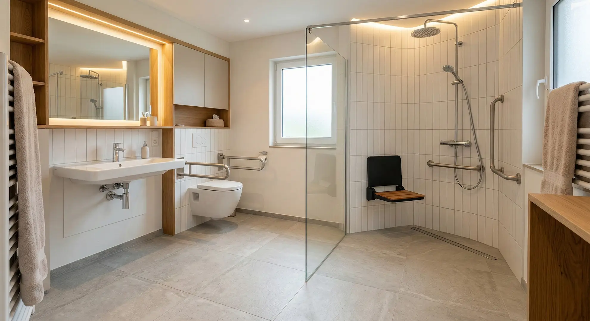

Ein veraltetes Bad kostet täglich Lebensqualität. Afellah Haustechnik übernimmt als Meisterbetrieb alles – von der ersten Idee bis zur Fertigstellung. Kein Koordinationsstress zwischen Gewerken.

Seit 2008 sanieren wir Bäder in Krefeld, Meerbusch, Willich und Kempen. Mit persönlicher Betreuung und einem festen Ansprechpartner. Wir koordinieren alle Gewerke selbst – Sie haben nur einen Ansprechpartner für alles.
Jetzt kostenlos anfragen
Wir planen Ihr Bad von Grund auf neu – nach Ihren Wünschen, Ihrem Budget und den baulichen Gegebenheiten.
Folienabdeckung und Absaugsysteme halten Staub auf der Baustelle. Ihr Zuhause bleibt so sauber wie möglich.
Bodengleiche Dusche, Haltegriffe, rutschfeste Böden – wir bauen Bäder, die für alle Altersgruppen sicher und komfortabel sind.
Bis zu 6.250 € Zuschuss für barrierefreie Umbauten (KfW-Programm 455-B). Wir kümmern uns um den Antrag.
Wir schauen uns Ihr Bad an und besprechen Ihre Wünsche – ohne Kosten, ohne Druck. Kein Telefonat, sondern ein echter Vor-Ort-Termin.
Jetzt kostenlos beraten lassenSchriftlich, vollständig, verbindlich. Was draufsteht, wird gemacht – keine Nachforderungen, keine bösen Überraschungen.
Jetzt Angebot anfordernSauber, strukturiert, pünktlich. Sie bekommen Ihr Bad genau wie besprochen – und genau dann, wenn vereinbart.
Jetzt anfragenDas KfW-Förderprogramm 455-B unterstützt barrierefreie Umbauten im Bestand. Gefördert werden bodengleiche Duschen, Haltegriffe, rutschfeste Böden und weitere altersgerechte Maßnahmen.

Eine normale Badsanierung dauert bei uns 5–10 Werktage – je nach Umfang. Wir planen die Arbeiten so, dass Sie so wenig Zeit wie möglich ohne funktionierendes Bad auskommen müssen.
Ein einfaches Bad (6–8 m²) kostet typischerweise zwischen 8.000 und 15.000 €. Wir erstellen immer ein schriftliches Festpreisangebot – ohne versteckte Kosten.
In der Kernphase nicht. Wir minimieren die Ausfallzeit durch sorgfältige Planung und zügige Ausführung – und informieren Sie vorab genau über den Zeitplan.
Ja, für barrierefreie Umbauten gibt es die KfW-Förderung 455-B mit bis zu 6.250 € Zuschuss. Wir klären mit Ihnen, ob und welche Maßnahmen förderfähig sind.
Wir zeigen Ihnen das Problem sofort und besprechen gemeinsam das weitere Vorgehen. Wir rechnen nichts ab, was wir nicht vorher besprochen haben.
Das machen wir. Demontage, Abtransport und fachgerechte Entsorgung sind bei unseren Aufträgen standardmäßig inklusive.
Ja, das ist eine unserer Kernleistungen. Bodengleiche Duschen, Haltegriffe, rutschfeste Böden, höhenverstellbare Waschbecken – alles aus einer Hand.
Einfach anrufen oder das Kontaktformular ausfüllen. Wir vereinbaren einen kostenlosen Vor-Ort-Termin, schauen uns die Situation an und erstellen ein verbindliches Festpreisangebot.